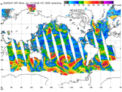

The late-April National Research Council report on the state of NASA's Earth science program mentioned six important missions that were in dire budget straits due to NASA's misplaced emphasis on sending humans back to the dead Moon rather than learn more about our own changing planet. Earlier I've covered Global Precipitation Measurement, which aims to measure rainfall over the bulk of the planet, and the GIFTS mission, which would demonstrate new technology for more detailed and more accurate measurements of atmospheric temperature and water vapor. Despite their great potential for directly benefitting our lives through improved weather forecasting, climate prediction, and more, the former has been delayed until 2010, while the latter has been cancelled.
Another cancelled mission is called "Ocean Vector Winds." Its goal is simple: to measure the speed and direction of winds over the ocean surface. What does this data buy us? Apparently, quite a lot: improved weather forecasts and storm warnings; improved knowledge of air-sea interactions and ocean circulation and thus improved climate models; and the possibility of more accurate El Nino forecasts. El Nino, as many know, is the phenomenon, driven by changes in air and ocean circulation in the equatorial Pacific, that leads to drastic disruptions of normal climate patterns every few years, with corresponding drastic disruptions to the lives of many millions of people.
As the NRC panel indicates, the combination of all these benefits would also allow for better management of global agriculture, water resources, and more. This is one of many areas of Earth science where improving our overall knowledge will have wide-ranging benefits to great numbers of people all over the world.
Ocean surface winds can be measured from the ground, can't they? Does this really require a satellite? Indeed, buoys and ships can be, and have been, used to provide similar measurements. But they cannot cover nearly enough territory to provide a global map of ocean winds. The data they provide is helpful, but not nearly comprehensive enough to offer the same knowledge and benefits as data from a satellite that can scan all the world's oceans in a short amount of time.
Aren't there satellites that are already gathering this data for us? Yes, there is currently one such satellite, a NASA satellite called QuikSCAT that carries a scatterometer instrument called SeaWinds. QuickSCAT was launched in 1999 as a quick replacement for NSCAT, which had prematurely failed a couple years earlier after a short, but successful, mission.
QuikSCAT has continued NSCAT's successes, while avoiding its premature death. A forecaster from the National Centers for Environmental Prediction's Tropical Prediction Center is quoted in the NRC report saying that "without QuikSCAT they would be forecasting in the dark." QuikSCAT not only hasn't failed, but is now three years beyond its designed lifetime. Since it won't last forever, what comes next?
Its first followup, SeaWinds on ADEOS-II, followed the unfortunate path of NSCAT and failed in 2003 after only a few months of operation. And now the other followup, Ocean Vector Winds, originally scheduled for launch in 2008, has been cancelled by NASA.
(Orbiting American scatterometers appear to frequently fall victim to power failures on the satellites that carried them. The original NASA scatterometer was launched on NASA's Seasat mission in 1978. Less than 100 days after launch, "a power failure terminated the mission." NASA didn't send another scatterometer into space until NSCAT in 1996. Barely nine months into its mission aboard the Japanese spacecraft ADEOS-I, "a power failure terminated the mission." Then in 2003, a SeaWinds scatterometer was launched on ADEOS-II. You guessed it: six months later, "a power failure terminated the mission." Only QuickSCAT, the one mission thrown together in a hurry, has escaped this curse of the power failure.)
So what is a scatterometer anyway? A scatterometer bounces microwaves off the ocean surface at an angle and measures how much of this radiation gets scattered back to its detectors. The size of this "backscatter" signal is a measure of the roughness of the ocean surface on the scale of the wavelength of the radiation—in the case of these instruments, a few centimeters.
How does this give us the wind speed and direction at the ocean surface? As the air moves across the ocean, it generates waves, typically with wavelengths on the order of centimeters—generating exactly the roughness on the ocean surface that will cause the radar backscatter that is measured by the scatterometer.
Via the method described above, QuikSCAT can measure wind speeds from 7 to 45 miles per hour, with an accuracy of around 4 miles per hour. By bouncing microwaves off the ocean at different angles as the satellite orbits overhead, the direction the waves are facing, and hence the wind direction, can also be derived, to an accuracy of around 20 degrees. According to a 2004 article in Science magazine, this accuracy in speed and direction is comparable to the accuracy of buoy measurements. Unlike buoys, though, the QuikSCAT data is averaged over regions 16 miles across.
There are complications, of course. Rain, in particular, can contaminate the backscatter measurements, by scattering plenty of microwave radiation itself and also by roughening the ocean surface independent of any wind. Land also spoils the data, so ocean winds within 16 miles of land cannot be reliably measured by QuikSCAT.
Looking forward to when QuikSCAT finally dies of old age, the European Space Agency plans to launch its own scatterometer, ASCAT, on its first polar-orbiting environmental satellite later this year. ASCAT will only have about half the coverage of QuickSCAT, however, and the NRC notes that the large gap between its measurement swaths will make it difficult to use to improve weather forecasts.
Meanwhile, NASA, NOAA, and the Department of Defense teamed up to launch Windsat in 2003. Windsat aims to measure ocean winds, but with a radiometer rather than a scatterometer. In other words, by measuring microwave emissions coming up through the atmosphere rather than by bouncing microwaves off the ocean surface. This is a new method, and a test case for a future instrument to be incorporated into the next generation of polar-orbiting weather satellites. Unfortunately, according to the NRC report, "Preliminary analysis suggests that such passive systems will produce wind observations with less accuracy and with more contamination by rain and land than active scatterometers."
So, with the cancellation of the Ocean Vector Winds mission, is QuikSCAT the end of the road for American scatterometers? Will we have to be content with a reduced capability for measuring ocean surface winds? It sounds so esoteric when I put it that way. Instead, perhaps I should borrow words from the NRC report and ask if will we will be content to allow a situation that "would worsen El Nino and hurricane forecasts and weather forecasts in coastal areas?"
We have a great tool available for learning more about the planet we live on. A tool that we've already spent many years perfecting. A tool with no comparable replacement. Why abandon it now?
Recent Comments